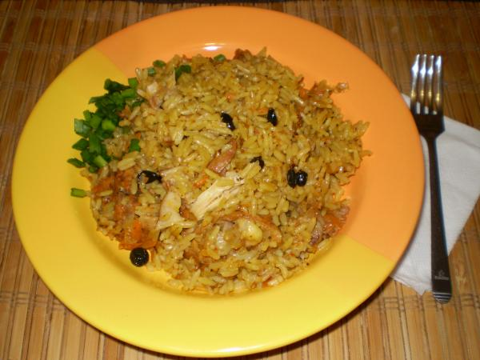

Плов сибирский
Для приготовления сибиркого плова нам потребуется:
- Мясо (баранина) — 1,0 кг.
- Рафинированное подсолнечное масло.
- Рис длиннозерный золотистый.
- Лук репчатый — 2-3 шт.
- Морковь — 2-4 шт.
- Чеснок.
- Барбарис.
Мясо режем на куски среднего размера. Нагреваем казан. Казан необходимо хорошо прогреть. В нагретый казан наливаем масло. Хорошо прогреваем в казане масло.
Проверить готово ли масло к закладке мяска можно таким нехитрым способом – взять тонкий кусочек мяска и опустить краешек в нагретое масло. Если мяско радостно зашкворчит, то масло хорошо прогрелось и можно закладывать мяско.
Как заложили мясо, его необходимо очень быстро и энергично перемешивать, чтобы оно со всех сторон покрылось коркой и не стало впитывать в себя все масло в казане.
Оставляем мясо тушиться под крышкой на среднем огне примерно . Теперь необходимо дать рису немного впитать воды перед закладкой. Для этого мы наливаем в кастрюлю с рисом воду (2-3 раза) и сливаем. Пусть рис набухает.
Возвращаемся к мясу. Перемешиваем его еще раз и закладываем предварительно нарезанную соломкой морковь.
Перемешиваем морковку с мясом и оставляем тушиться на среднем огне .
После того, как морковка протушилась, закладываем нарезанный полукольцами лук.
Перемешиваем лук с мясом и морквой. Оставляем тушиться под крышкой на .
Следом засыпаем барбарис. Всё перемешиваем и тушим еще .
Далее берем 3-4 неочищенные дольки чеснока и тушим . После чего эти чесночинки вынимаем и выбрасываем.
Теперь берем вскипяченную в чайнике воду и вливаем в казан, чтобы вода покрывала содержимое казана на пару сантиметров. Оставляем всё это дело вариться на среднем огне.
Настало время к закладке риса. Осторожно выкладываем рис в казан и разравниваем.
Ни в коем случае нельзя перемешивать рис и мясо, иначе в итоге у нас получится не плов, а рисовая каша с мяском!
Осторожно заливаем рис вскипяченной водой через шумовку. Вода должна покрывать рис ориентировочно на 2 сантиметра. Теперь включаем максимальный огонь. Наша задача как можно быстрее выпарить из казана воду. Крышкой казан не закрывать! Разравниваем рис и втыкаем очищенные дольки чеснока. Утапливаем их в рис. Далее кладем кусок масла и оставляем томиться под крышкой на слабом огне .
После этого открываем казан, отключаем огонь, перемешиваем рис с мясом. Вот наш плов и готов!
Приятного аппетита!
